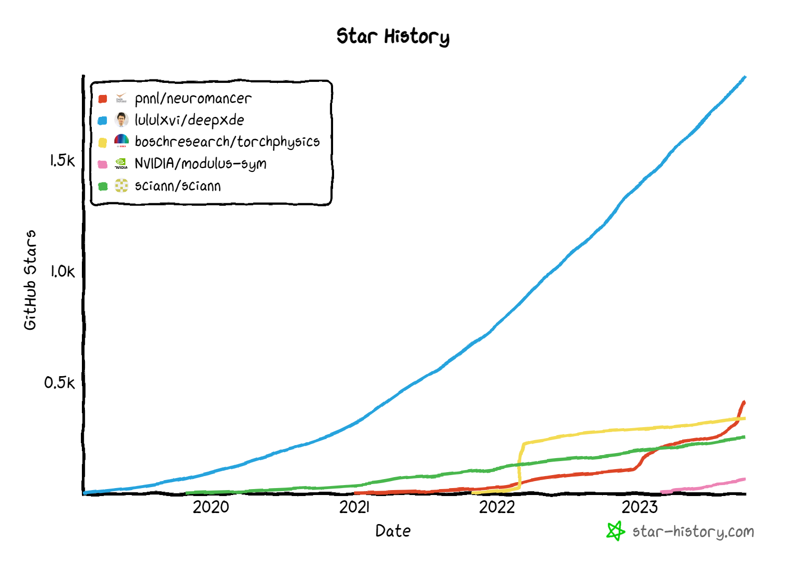

name: discretefourier class: center,middle, .toc[[✧](../index.html)] .title[NO] <br/> .subtitle[Neural Operators] <br/><br/> <!-- .author[Grzegorz Gruszczy≈Ñski] .institution[IDEAS NCBR, CYFRONET] --> .coauthor[Grzegorz Gruszczy≈Ñski<sup>1,2</sup> M. Bukowicki<sup>1</sup> Sz. Nowakowski<sup>1</sup>] <br/> .institution[<sup>1</sup>University of Warsaw <sup>2</sup>IDEAS NCBR] <!-- <textarea id="source"> class: center,middle, .toc[[✧](../index.html)] <br/><br/><br/><br/> .title[Scientific ML] .subtitle[Introduction] <br/><br/> .author[Grzegorz Gruszczy≈Ñski] .institution[IDEAS NCBR, CYFRONET] <br/> <!-- .coauthor[Sherlock S. Holmes<sup>1</sup>, John H. Watson<sup>2</sup>] .institution[<sup>1</sup>Baker Street Research, <sup>2</sup>Edinburgh University] --> <br/><br/> .date[December, 2023] <br/><br/><br/> .note[Created with [{Liminal}](https://github.com/jonathanlilly/liminal) using [{Remark.js}](http://remarkjs.com/) + [{Markdown}](https://github.com/adam-p/markdown-here/wiki/Markdown-Cheatsheet) + [{KaTeX}](https://katex.org)] --- name: toc class: left, .toc[[✧](../index.html)] # Table of Contents 1. [Introduction](#WhyGPU) 1. [DeepONet architecture](#GPU_memory_model) 1. [FNO architecture](#GPU_programming_model) 1. [ViTO architecture](#GPU_programming_model) 1. [Future Outlook](#porting_issues) 1. [Questions](#questions) --- class: left, .toc[[✧](../index.html)] # Thanks to .left-column[ <br/> <br/> <br/> <br/> <img style="width:200px" src="../logos/eurocc2.jpg"> ] .right-column[ <img style="height:450px" src="../figures/rysy.jpg"> <a href="https://granty.icm.edu.pl" style="font-size: 20px;" target="_blank">GPU wait4you - granty.icm.edu.pl</a> ] --- class: left, .toc[[✧](../index.html)] # What do we mean by 'Operator'? **Function: ** - number to number mapping - `$ f(x,y) = 5x + sin(y) $` - image classification -- **Functional:** - function to number mapping - `$ \int_{0}^{\pi} sin(x) dx = 2$` -- **Operator:** - function to function mapping - derivative `$ x(t) \rightarrow x'(t) $` - integral `$ x(t) \rightarrow \int K(s,t) x(s) ds $` - dynamical system: `$ x(t) \rightarrow System \rightarrow y(t) $` <br> [Link to source.](https://lululxvi.github.io/files/talks/2021UIowa.pdf) --- class: left, .toc[[✧](../index.html)] # What do we mean by 'Operator'? What is the 'operator' between the images? -- <br> Here, the 'operator' is the solution of diffusion equation at $t = T_{end}$ \begin{aligned} \frac{\partial u}{\partial t} - \lambda \frac{\partial ^2 u}{\partial x^2} =0\\ \end{aligned} --- class: left, .toc[[✧](../index.html)] # What do we mean by 'Operator'? We do not need to know the 'operator' explicitly. It can be learned. [Img source.](https://arxiv.org/abs/2111.03794v1) --- class: left, .toc[[✧](../index.html)] # What do we mean by 'Operator'? <br> [Link to source.](https://www.nature.com/articles/s42256-021-00302-5) --- class: left, .toc[[✧](../index.html)] # Key features of NO - learn the mapping between function spaces - invariant to different approximations and grids But how? --- class: left, .toc[[✧](../index.html)] # DeepONet - training <div align='center'> </div> -- <br> Img [source1](https://www.nature.com/articles/s42256-021-00302-5), [source2](https://arxiv.org/pdf/2103.10974.pdf). --- class: left, .toc[[✧](../index.html)] # DeepONet Basic implementation <div align='center'> </div> `$ G(u)(y) $`: is a function of `$ y $` conditioned on `$ u $`. Components: - `$u(x)$` --- *branch* --- value of input functions at arbitrary points, `$ x $`. - `$y$` --- *trunk* --- query points, `$ y $`. - `$ G(u)(y) $` --- *DeepONet's output* --- solution at the query point <br> [Link to source.](https://www.nature.com/articles/s42256-021-00302-5) --- class: left, .toc[[✧](../index.html)] # DeepONet Advanced implementation - when the dimension of `$y$` no longer matches `$u(x_i)$`. `$ G(u)(y) \approx \sum_{k=1}^p \underbrace{b_k \big( u(x_1), u(x_2), ..., u(x_m) \big)}_{ branch} \underbrace{t_k(y)}_{trunk} $` [Source.](https://www.nature.com/articles/s42256-021-00302-5) <!-- `An unstactek DeepONet can ve viewwed as stacked one with all the branch nets sharing the same set of parameters.` --> --- class: left, .toc[[✧](../index.html)] # Another approach **Observation (AKA inductive bias):** If we know that some mathematical operation takes place in the physical process then we can explicitly use it. The NN does not need to re-discover this operation. --- class: left, .toc[[✧](../index.html)] # The differential operator Let `$ \mathcal{O} $` be a differential operator, for example `$ \mathcal{O} = \partial_t + \nabla(k \nabla \cdot) $` `\begin{eqnarray} \mathcal{O} u(t, x) &=& f(x) \quad x \in D \\ u(t, x) &=& 0, \quad x \in \partial D \end{eqnarray}` Our goal is to find the inverse operator `$ \mathcal{O}^{-1} $` to the aforementioned Initial Value Problem (IVP). Then, the solution will be straighforward, \begin{aligned} u(t,x) = \mathcal{O}^{-1} f(x) \end{aligned} --- class: left, .toc[[✧](../index.html)] # Preliminary The solution, u, to the IVP can be represented as the convolution with some other function `$ G $`, ` \begin{aligned} u = G \star f = \int_D G(x,\xi)f(\xi) d \xi \end{aligned} ` -- For example, the `$ G $` function for the diffusion equation is the well known Gaussian bell, `\[ G(x, x', t) = \frac{1}{\sqrt{4 \pi k^2 t}} exp \bigg[- \frac{(x - x')^2}{4k^2 t} \bigg] \]` --- class: left, .toc[[✧](../index.html)] # Intuition <img style="width:100%" src="../figures/diffusion_fundamental.png"> --- class: left, .toc[[✧](../index.html)] # More formally **Def**: The Green's function, `$ G $`, is defined as the impulse responce, `$ \delta $`, of the inhomogeneous linear differential operator, `$ \mathcal{O} $`, <br> with specified initial conditions or boundary conditions... ` \begin{aligned} \mathcal{O} G = \delta \end{aligned} ` -- We will show that for a linear PDE ` \begin{aligned} \mathcal{O} u(x) = f(x) \end{aligned} ` -- The solution `$ u(x) $` can be expressed as ` \begin{aligned} u(x) = \int G(x, \xi) f(\xi) d \xi \end{aligned} ` --- class: left, .toc[[✧](../index.html)] # More formally Take the Green's function definition `\begin{aligned} \mathcal{O} G(x, \xi) = \delta (x - \xi) \end{aligned}` Multiply it by `$ f(\xi) $` and integrate `\begin{aligned} \int \mathcal{O} G(x, \xi) f(\xi) d \xi = \int \delta (x - \xi) f(\xi) d \xi = f(x) \end{aligned}` -- As `$ \mathcal{O} $` is linear and does not act on `$ \xi $` `\[ \mathcal{O} \underbrace{ \int G(x, \xi) f(\xi) d \xi }_{u(x)} = f(x) \]` -- Obviously, the NN is supposed the learn the Green's function 😈 Links [1,](https://en.wikipedia.org/wiki/Green%27s_function) [2,](https://www.youtube.com/watch?v=ism2SfZgFJg&ab_channel=Mathemaniac) [3.](https://www.youtube.com/watch?v=AqfYSNsrnhI&ab_channel=NathanKutz) --- class: left, .toc[[✧](../index.html)] # Architecture overview Source: ` "Neural Operator - Graph Kernel Network for Partial Differential Equations", 2020` <!-- https://math.stackexchange.com/questions/596112/difference-between-the-fundamental-solution-and-the-green-function --> <!-- https://mathworld.wolfram.com/GreensFunction.html --> <!-- Fundamental solution solves ùê∑ùê∫(ùë•‚àíùë¶)=ùõø(ùë¶) on the entire space ℝ^ùëõ. Green's function solves ùê∑ùê∫(ùë•‚àíùë¶)=ùõø(ùë¶) on some domain Œ©‚äÇ‚Ñù^ùëõ, and satisfies some homogeneous boundary condition. (Most often, but not always, the Dirichlet condition). --> --- class: left, .toc[[✧](../index.html)] # Result <img style="width:100%" src="../figures/GKN_vs_DNN.png"> Source: ` "Neural Operator - Graph Kernel Network for Partial Differential Equations", 2020` --- class: left, .toc[[✧](../index.html)] # Cool enough? -- Cool, but convolutions are computationaly expensive. -- <br> **Rescue theorem:** *A convolution in time is a multiplication in frequency.* ` \begin{aligned} \mathcal{F} (f \star g ) &= \mathcal{F}(f) \cdot \mathcal{F}(g) \\ \Leftrightarrow f \star g &= \mathcal{F}^{-1} [ \mathcal{F}(f) \cdot \mathcal{F}(g)] \end{aligned} ` <!-- where `$ \mathcal{F} $` is the Fourier transform and `$ \cdot $` denotes the point-wise multiplication. --> <br> This leads us to the Fourier Neural Operator (FNO). --- class: left, .toc[[✧](../index.html)] # Fourier Neural Operator - Architecture The linear transform W (the bias term) keeps the track of non-periodic boundary. Source: ` "Fourier Neural Operator for parametric partial differential equations", Li Z. et al, 2021` --- class: left, .toc[[✧](../index.html)] # Fourier Neural Operator Update to the representation `\[ v_{t+1}(x):=\sigma\left(W v_t(x)+\left(\mathcal{K}(a ; \phi) v_t\right)(x)\right) \]` The kernel integral operator mapping `\[ \left(\mathcal{K}(a ; \phi) v_t\right)(x):=\int_D \kappa(x, y, a(x), a(y) ; \phi) v_t(y) \mathrm{d} y \]` The `$ \kappa $` plays the role of a kernel function which we learn from data. **Replace** the kernel integral operator, by a convolution operator defined in the Fourier space. `\[ \left(\mathcal{K}(\phi) v_t\right)(x)=\mathcal{F}^{-1}\left(R_\phi \cdot\left(\mathcal{F} v_t\right)\right)(x) \]` --- class: left, .toc[[✧](../index.html)] # Remark on filters -- <small> * Filters in convolution neural networks are usually local. Good to capture local patterns such as edges and shapes. </small> -- <small> * Fourier filters are global sinusoidal functions. Better for representing continuous functions. </small> [link](https://neuraloperator.github.io/neuraloperator/dev/user_guide/fno.html). <!-- https://uvadlc-notebooks.readthedocs.io/en/latest/tutorial_notebooks/DL2/Dynamical_Neural_Networks/Complete_DNN_2_2.html#Fourier-Filters-compared-to-CNNs Fourier Filters compared to CNNs One of the reasons proposed by Li et al. why fourier filters are more suited for dynamical problems than CNNs is because filters in convolution neural networks are usually local, while fourier filters are global sinusoidal functions. As such, CNNs are better in capturing local patterns such as edges and shapes, while fourier filters are better for representing continous functions (see image below). --> --- class: left, .toc[[✧](../index.html)] # Remark on Fourier space Some physical phenomena are known to be dependent on the frequency of the signal. The Fourier space may be a native space to describe them. Consider the advection-diffusion equation: `\begin{eqnarray} \frac{\partial u}{\partial t} + \beta \frac{\partial u}{\partial x} &=& \lambda \frac{\partial ^2 u}{\partial x^2} \\ u(x,0) &=& h(x) \end{eqnarray}` The analytical solution: $$ u_{analytical}(x,t) = \mathcal{F}^{-1}\bigg(\mathcal{F}\big(h(x)\big) e^{-i \beta k t } e^{k^2 \nu t }\bigg) $$ <!-- $$ \frac{\partial u}{\partial t} - \lambda \frac{\partial ^2 u}{\partial x^2} =0 $$ --> Observe that: - advection --> all modes shall travel with the same speed $ \beta $). - diffusion --> high frequency modes decay faster). <!-- --> --- class: left, .toc[[✧](../index.html)] # FNO achievements - again, resolution invariant solution operator - trained on a lower resolution, evaluated on a higher - [career](https://docs.nvidia.com/deeplearning/modulus/modulus-sym/index.html) at NVIDIA ;) Zero-shot super-resolution: Navier-Stokes Equation. Trained 64 x 64 x 20 dataset; evaluated on 256 x 256 x 80. [Original paper, 2020.](https://arxiv.org/abs/2010.08895) --- class: left, .toc[[✧](../index.html)] # Another Neural Operator Choose your favorite [transform](https://en.wikipedia.org/wiki/List_of_transforms) from wikipedia and publish... [Source, 2022.](https://arxiv.org/abs/2108.08481) <!-- ` "Neural Operator: Learning maps between function spaces with applications to PDES", Kovachki N., et al. 2022` --> --- class: left, .toc[[✧](../index.html)] # DeepONet vs FNO [Source](https://arxiv.org/abs/2111.05512): `A comprehensive and fair comparison of two neural operators (with practical extensions) based on FAIR data`, CMAME, 2022 -- Implementation difference: - FNO is easier if input and output are fully observed functions. - DeepONet is easier when given sparse observation from sensors a(x) and query u(y). --- class: left, .toc[[✧](../index.html)] # ViTO <!-- Source: "ViTO: Vision Transformer-Operator" --> <br> [Link to source.](https://arxiv.org/abs/2303.08891) --- class: left, .toc[[✧](../index.html)] # Which NO is the best? In case of a 2D wave equation, `$ u = u (x,y,t) $` `\[ u_{tt} = c^2 u_{xx} \]` And an inverse problem `$ u(x,y,T) \rightarrow u_0(x,y) $` -- <img style="width:80%" src="../figures/wave_eq_ViTO_vs_FNO_vs_DeepONet.png"> <br> [Link to source, 2023.](https://arxiv.org/abs/2303.08891) --- class: left, .toc[[✧](../index.html)] # Which NO is the best? [Link to source.](https://arxiv.org/abs/2303.08891) --- class: left, .toc[[✧](../index.html)] # PINO: Physics-Informed Neural Operator Neural Operators are trained only on data. <br> **Enhancement:** If we know the explicit form of the PDE, then it can be used in the equation loss analogously to the PINNs setting. --- class: left, .toc[[✧](../index.html)] # PINO vs numerical solver where: - PINO = PI-FNO - solver = pseudospectral method [Source.](https://arxiv.org/abs/2111.03794v1) --- class: left, .toc[[✧](../index.html)] # Future outlook Are NO going to beat numerical Computational Fluid Dynamics (CFD) solvers? <div align='center'> <img style="width:50%" src="../figures/graphcast_weather_prediction.png"> </div> Google claims: ``` GraphCast predicts weather conditions up to 10 days in advance more accurately and much faster than the industry gold-standard weather simulation system - the High Resolution Forecast (HRES), produced by the European Centre for Medium-Range Weather Forecasts (ECMWF). ``` <br> [Source](https://deepmind.google/discover/blog/graphcast-ai-model-for-faster-and-more-accurate-global-weather-forecasting/). --- class: left, .toc[[✧](../index.html)] # Future outlook - What is missing / not covered in this talk? - What is not immediately clear? ... at least for me ;) --- class: left, .toc[[✧](../index.html)] # Channels in traditional CNNs [Image source.](https://therealdaviddavis.medium.com/a-beginners-introduction-to-convolutional-neural-networks-da1886825710) --- class: left, .toc[[✧](../index.html)] # Geometric convolutions [Link to source.](https://doi.org/10.48550/arXiv.2305.12585) --- class: left, .toc[[✧](../index.html)] # Equivariance How NO handle rotations, moving reference frame, etc? [Link1,](https://uvadlc-notebooks.readthedocs.io/en/latest/tutorial_notebooks/DL2/Geometric_deep_learning/tutorial1_regular_group_convolutions.html) [Link2,](https://www.youtube.com/playlist?list=PLn2-dEmQeTfRQXLKf9Fmlk3HmReGg3YZZ) [Link3.](https://www.sci.unich.it/geodeep2022/slides/) --- class: left, .toc[[✧](../index.html)] # Conservativness PINNs/PINOs can enforce a conservation equation into their loss functions. `\[ \frac{\partial \rho}{\partial t} + \nabla \cdot \rho \boldsymbol u = 0 \]` -- But it is (weakly) obeyed only at the training points! The residuals of the classical numerical solvers can measure the error. -- Let us remind the integral form: `\[ \frac{\partial}{\partial t} \int_V \rho dV + \int_S \rho \boldsymbol{u} \cdot \boldsymbol{n} dS = 0 \Leftrightarrow GGO \\ \Leftrightarrow \int_V \bigg[ \frac{\partial \rho}{\partial t} + \nabla \cdot \rho \boldsymbol u \bigg] dV = 0 \]` [*Reference: Learning Physical Models that Can Respect Conservation Laws.*](https://arxiv.org/abs/2302.11002v4) --- class: left, .toc[[✧](../index.html)] # Non uniform grids <img style="width:90%" src="../figures/gnn-gif-parameterized-vortex-shedding.gif"> [Reference1.](https://developer.nvidia.com/blog/develop-physics-informed-machine-learning-models-with-graph-neural-networks/) [Reference2.](https://arxiv.org/pdf/2212.12794.pdf) --- class: left, .toc[[✧](../index.html)] # Neural-ODE -- <img style="width:40%" src="../figures/neural_ode_1.png"> [Paper of the year - NeurIPS conference (2018)](https://arxiv.org/pdf/1806.07366.pdf). --- class: left, .toc[[✧](../index.html)] # SINDy <small> Sparse Identification of Nonlinear Dynamics [(link)](https://uvadlc-notebooks.readthedocs.io/en/latest/tutorial_notebooks/DL2/Dynamical_Neural_Networks/Complete_DNN_2_1.html). </small> --- class: left, .toc[[✧](../index.html)] # Eigenfunction expansion Alternatively, the inverse function can represented by a eigenfunction expansion `\[ \mathcal{O} \phi_n = \lambda_n \phi_n \]` The solution is represented by a sum of the eigenfunctions `$ u(x,t) = \sum b_n \phi_n $`. --- class: left, .toc[[✧](../index.html)] # Packages <small> - <https://github.com/pnnl/neuromancer> - <https://github.com/lululxvi/deepxde> - <https://github.com/boschresearch/torchphysics> - <https://github.com/NVIDIA/modulus-sym> - <https://github.com/sciann/sciann> </small>  --- class: left, .toc[[✧](../index.html)] # References Nice tutorials: - <https://uvadlc-notebooks.readthedocs.io/en/latest/> - <https://neuraloperator.github.io/neuraloperator/dev/user_guide/> --- class: left, .toc[[✧](../index.html)] # Join us Fascinated? You can join us for a MSc / PhD. Contact: grzegorz.gruszczynski [Unicode Character U+0040](https://www.compart.com/en/unicode/U+0040) ideas-ncbr.pl --- class: left, .toc[[✧](../index.html)] # Questions? <!-- 1. Sketch `$u=\cos(\omega t)$` and `$v=\sin(\omega t)$`. Also sketch `$u$` vs. `$v$` with `$u$` along the x-axis and `$v$` along the y-axis. 2. Do the same but for `$u=\cos(\omega t)$` and `$v=\cos(\omega t)$`. 2. Do the same but for `$u=\cos(\omega t)$` and `$v=2\cos(\omega t)$`. 3. Do the same but for `$u=\cos(\omega t)$` and `$v=0$`. -->